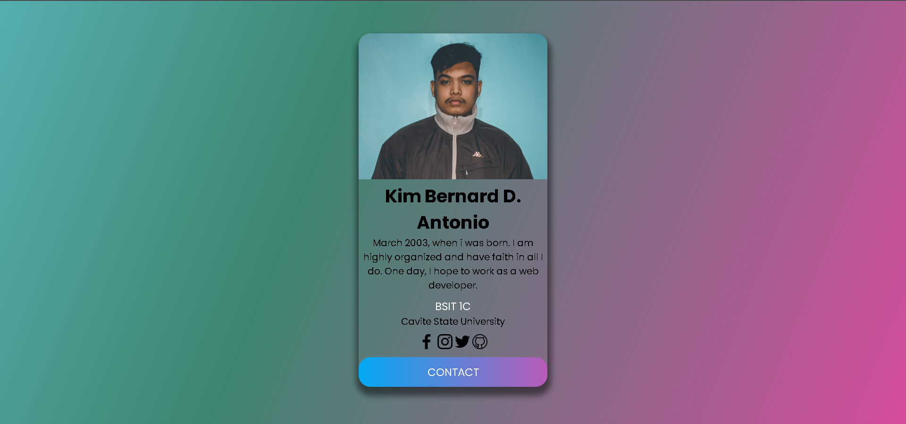
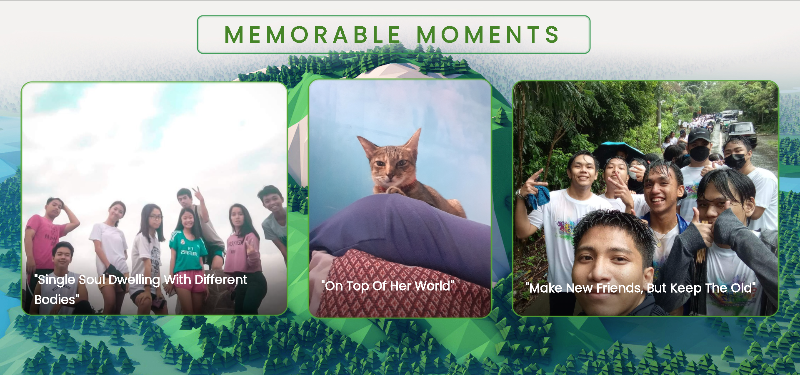
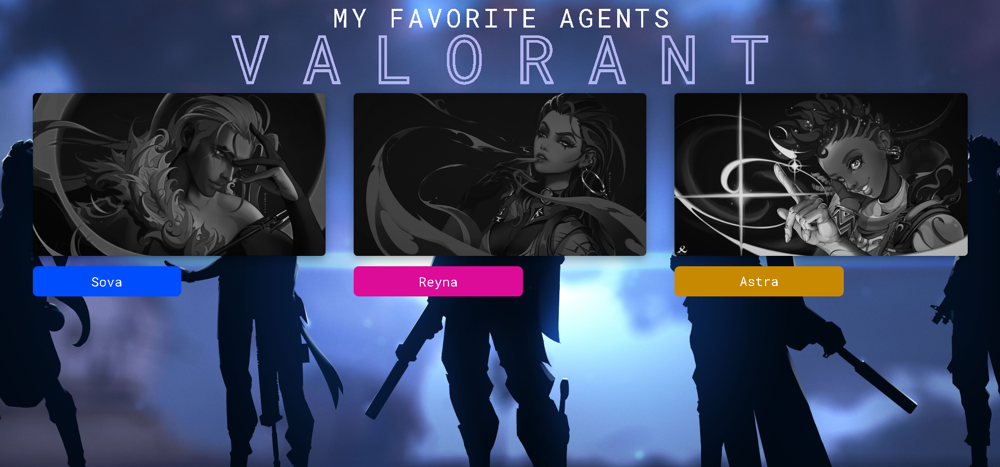
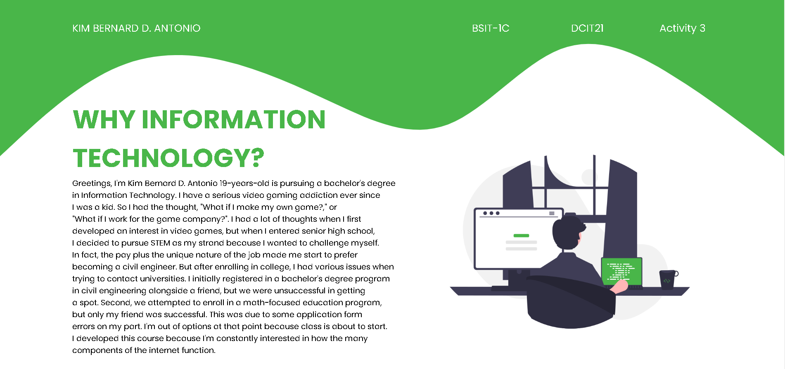
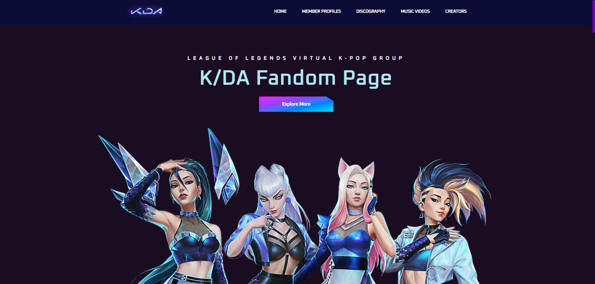
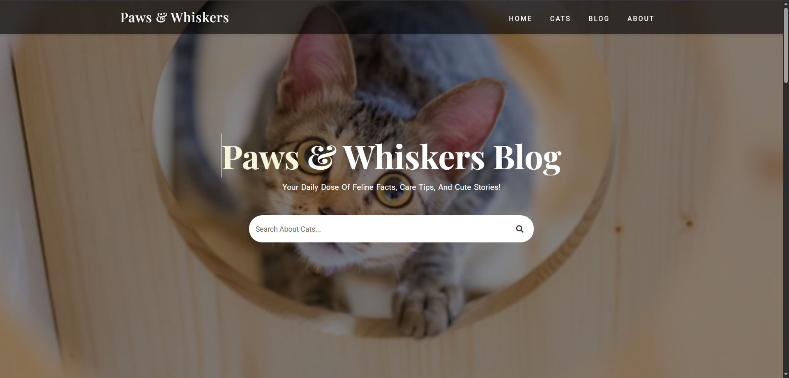

This activity is part of our introduction to computing course. I developed this style and these principles because I also enjoy brightly colored design, but I've come to know that simplicity is often more attractive.

When you hover over the image, the description for this particular photo will appear. I developed this concept in an effort to better integrate the background or theme of my images.

This project of mine is one of my favorites since I believe it shows some improvement in my designing abilities, but I'm also quite happy with the great grade I received. When you hover over an agent's name, their statistics are displayed.

This project is the first thing we have ever created, and I came up with this theme and design since I believe it to be less simple but that it still needs some elements.

This project was created as part of my exploration into blending web design with fandom culture. I chose K/DA for its unique mix of music, gaming, and style. Through this design, I aimed to capture the group's futuristic and vibrant aesthetic while keeping the layout simple and engaging for fans.

This blog was created as a space to share my love for cats and web design. It reflects my passion for building clean and visually engaging websites while celebrating the charm and curiosity of our feline friends. Through this, I’ve learned that even the simplest designs can leave a lasting impression.